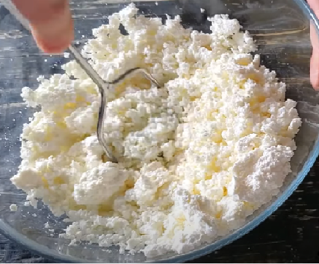
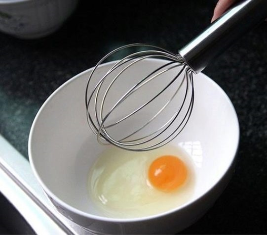
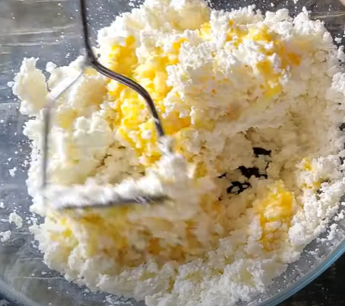
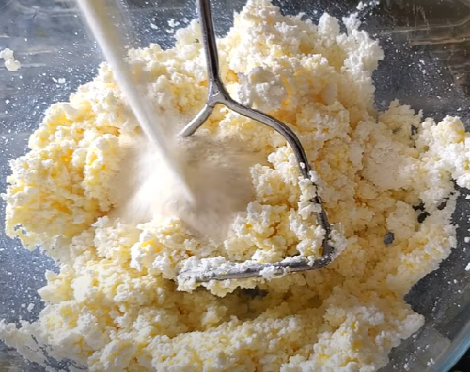
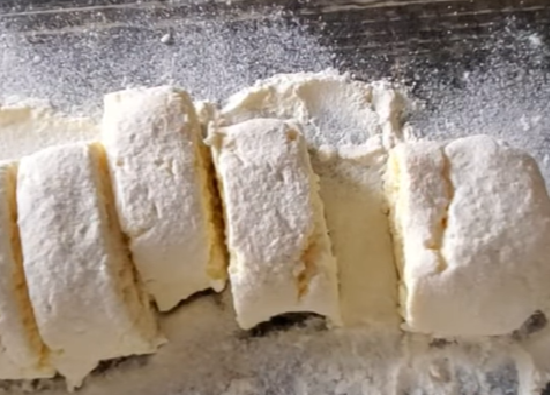
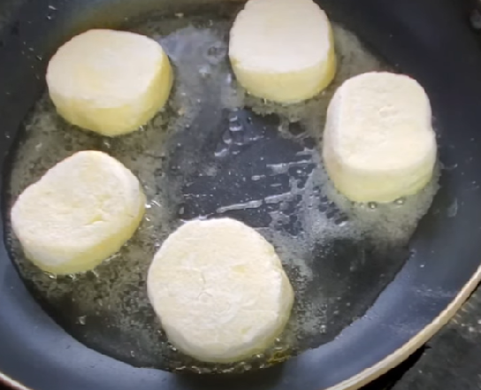

|  | 400 грам кисломолочного сиру вимнути до однорідності або перетерти через сито |
|  | В окремій посудині збиваємо 1 яйце і 3 ст. л. цукру |
|  | Змішуємо яйця з сиром |
|  | Додаємо 40 грам манки. За смаком можемо додати лимону, ванільного цукру, цедру, родзинки |
|  | Сформувати сирники на присипаній борошном поверхні |
|  | Обсмажуємо на розігрітій скороводі з двох сторін сирники на присипаній борошном поверхні |